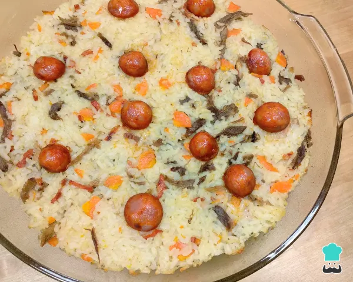

Arroz de Pato

Description:
Ingredients:
- 1 and 1/2 cup of rice
- 300g of cooked shredded duck
- 100 grams of Portuguese sausage, chopped.
- 1 chopped medium carrot
- 1 diced small onion
- 2 spoons of olive oil
- salt
Steps:
- Start by chopping the Portuguese sausage and browning it in a pot over low heat, so that it releases its fat without burning.
- Then, increase the heat, add the olive oil and onion, and let it sauté for a while. When the onion starts to golden, add the rice and carrots, and mix everything together.
- To cook the shredded duck rice in the oven, add 3 cups of water and salt to taste to the pot and wait for it to boil. Then, lower the heat, cover the pot, and cook for 10-15 minutes until the rice becomes dry and tender. At this point, add the shredded duck and mix everything together.
- Put the mixture in a greased baking dish, decorate it with a few slices of Portuguese sausage, and bake in the oven at 220ºC (425ºF) until it becomes golden brown.
- After the previous step, your shredded duck rice in the oven is ready. It's quite easy to prepare, isn't it? And it's delicious! Don't hesitate to make it for your family and let us know in the comments what you think. Enjoy your meal!